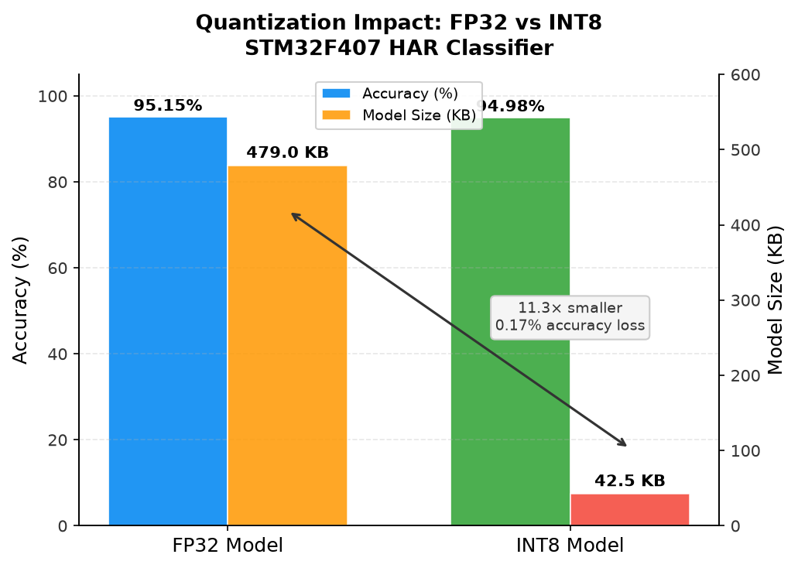
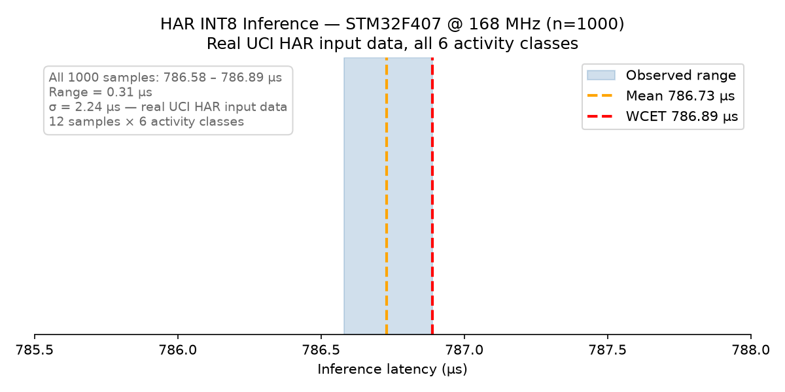

Real-Time Neural Network Inference on STM32F407 under FreeRTOS
Deploying a quantized INT8 classifier on a Cortex-M4 microcontroller and measuring exactly how long it takes.
This page details Tier 1 of a larger project named "Edge AI Across the Compute Spectrum Project" where I deploy and measure the same machine-learning workload across the full hardware compute spectrum, from a Microcontroller, to an Embedded GPU, to a General-Purpose Computer. Alongside this Tier 1 (MCU) implementation, the "Edge AI Across the Compute Spectrum Project" also includes Tier 2 (Embedded GPU) and Tier 3 (General-Purpose Computer/MacBook).
Most machine learning runs on powerful hardware: GPUs, servers, the cloud. But an increasing amount of it needs to run on the opposite end of the spectrum which are tiny embedded devices with kilobytes of memory and hard real-time constraints. Sensors, wearables, industrial controllers, avionics. On these systems, it isn't enough for a model to be accurate. It has to run predictably, completing within a guaranteed time window, every single time, even while other tasks compete for the processor.
This project is my exploration of exactly this problem. I trained a neural network on my laptop, compressed it to fit on a microcontroller, deployed it under a real-time operating system with competing tasks, and then measured down to individual clock cycles how long each inference actually takes on real hardware.
The full video walkthrough is below, followed by a written summary. The complete project is available on my GitHub.
Video Walkthrough
The Hardware
The target is an STM32F407VGT6 microcontroller which has an ARM Cortex-M4F processor running at 168 MHz , with 1 MB of flash and 192 KB of SRAM. It has a hardware floating-point unit and DSP extensions with SIMD instructions that the INT8 inference kernels exploit for packed multiply-accumulate operations.
Notably, this chip has no data cache. That sounds like a limitation, but it turned out to be one of the most important properties for this project: every memory access hits SRAM in a fixed, predictable number of cycles. No cache misses, no warm-up, no variability. As we'll see, this is a large part of why the timing came out so deterministic.
The Model
The neural network model is trained on the UCI Human Activity Recognition dataset which contains accelerometer and gyroscope data from 30 people with smartphones on their waist performing 6 activities (walking, walking upstairs, walking downstairs, sitting, standing, laying). Each 2.56-second window of motion is pre-processed into 561 features, and the network classifies which activity it represents.
The architecture is deliberately small, a three-layer fully-connected sequential network (561 → 64 → 32 → 6) with ReLU activations and a softmax output, built in TensorFlow/Keras. About 38,000 parameters. Trained with a fixed random seed for full reproducibility, it reaches 95.15% test accuracy in under 15 seconds on a laptop.
Quantization
A 32-bit float model is too large and too slow for a microcontroller. So I applied post-training INT8 quantization using TensorFlow Lite which converts every weight from a 32-bit float to an 8-bit integer. The critical step is calibration: feeding 100 real training samples through the model so the converter can measure each layer's value range and choose optimal scale factors.
The results:
| FP32 | INT8 | |
|---|---|---|
| Accuracy | 95.15% | 94.98% |
| Model size | 479.0 KB | 42.5 KB |
11.3× smaller, with only 0.17% accuracy loss. That 42.5 KB file is what goes onto the chip.

On-Chip Footprint
Using ST's X-CUBE-AI tool, the quantized model is converted to optimized C code and analyzed for exact resource usage before any application code is written:
- Flash: 51.27 KB — just 5% of the available 1 MB
- RAM: 4.24 KB — just 2.2% of the available 192 KB
- 38,336 multiply-accumulate operations (MACCs) per inference, 94% concentrated in the first layer
Desktop validation confirmed 100% agreement between the generated C model and the original TFLite model, with a cosine similarity of 0.999998. So, the code generation introduced no meaningful numerical error.
The Real-Time Architecture
This is the heart of the project. Rather than running inference in a simple loop, I built three FreeRTOS tasks at distinct priorities to create realistic scheduler competition:
- SensorTask (AboveNormal priority): every 100 ms, loads a real test sample into the model's input buffer and signals the inference task via a binary semaphore. It cycles through 12 samples covering all 6 activity classes. Because it's the highest-priority task, it preempts everything else when it fires.
- InferenceTask (Normal priority): waits for the signal, then runs one inference. It reads a hardware cycle counter immediately before and after, then posts the elapsed cycle count to a message queue.
- LogTask (BelowNormal priority): collects cycle counts and accumulates running statistics across 1,000 runs.
Measuring the Timing
The measurement uses the Data Watchpoint and Trace (DWT) cycle counter built into the ARM Cortex-M4 which is a hardware counter that ticks once every processor clock cycle. At 168 MHz, that's one tick every 5.95 nanoseconds, roughly 167× finer than the operating system's millisecond tick timer, which couldn't measure a sub-millisecond event at all.
The measurement window is clean by design: the counter is read immediately before and after the inference call, and the higher-priority sensor task can only preempt between inferences, never during one. So what's measured is pure inference computation time, with no scheduling overhead mixed in.
The Results
Across 1,000 inferences on real activity data, under active scheduler competition:
| Metric | Value |
|---|---|
| Mean latency | 786.73 µs |
| Minimum | 786.58 µs |
| Maximum observed latency* | 786.89 µs |
| Standard deviation | 2.24 µs |
| CPU utilisation (100 ms period) | 0.79% |
* Maximum observed latency across 1,000 measured runs, which is a measurement-based characterization, not a formally proven Worst-Case Execution Time. See Limitations below for what that distinction means.

The entire spread across 1,000 runs is 0.31 microseconds which is about 52 clock cycles. That tiny variation isn't random noise, it comes from different activity classes producing slightly different data patterns, which take marginally different paths through the 8-bit integer arithmetic.
Why is the variation this small? Three architectural reasons working together: no data cache means fixed-latency memory access with no cache misses; all buffers are statically allocated, so there's no dynamic memory allocation during inference; and the measurement window can't be interrupted. Together, these produce latency that is highly repeatable and low-jitter. Using the observed maximum as a practical working figure, the task runs at just 0.79% CPU utilisation at its 100 ms period, leaving enormous headroom. However, as the note below explains, this is an informal utilisation argument based on measured data, not a formal Rate Monotonic schedulability proof.
Limitations
The 786.89 µs figure quoted throughout this page is the maximum value observed across 1,000 measured runs under FreeRTOS scheduling load. It is an empirical characterization, not a mathematically proven Worst-Case Execution Time. It does not constitute exhaustive path coverage or a certification-grade timing guarantee, because a rare interference or input scenario outside the 1,000 tested runs could in principle produce a higher value. A formally proven WCET would require static or path-based timing analysis of the compiled binary (tools such as aiT, OTAWA, or Chronos), which is standard practice for safety-critical certification (e.g. DO-178C) but outside the scope of this project. Measurement-based characterization over a large number of runs is standard practice for prototype-stage timing analysis, and is the approach used throughout this project.
Similarly, timing safety here relies on task periodicity, not explicit locking. SensorTask's 100 ms period is designed to exceed the observed inference latency with substantial margin, which is what prevents SensorTask from preempting InferenceTask mid-inference in practice. This is a timing argument rather than an enforced guarantee, since there are no critical sections or explicit locks around the DWT measurement window. A more robust implementation would use a mutex or disable interrupts around the measurement window to make this guarantee explicit rather than implicit.
What's Next
The immediate next step is deploying this same model on a Jetson Orin Nano, moving from a microcontroller to an embedded GPU platform to explore the effect of parallelism across cores, to compare how identical inference behaves on very different hardware. Further out, I'm interested in exploring an FPGA implementation using high-level synthesis, mapping these same operations onto reconfigurable hardware to investigate parallelism and hardware-software co-design.
The complete project including the training and quantization scripts, test sample generation, full embedded C project, timing results, and detailed documentation are available on GitHub.